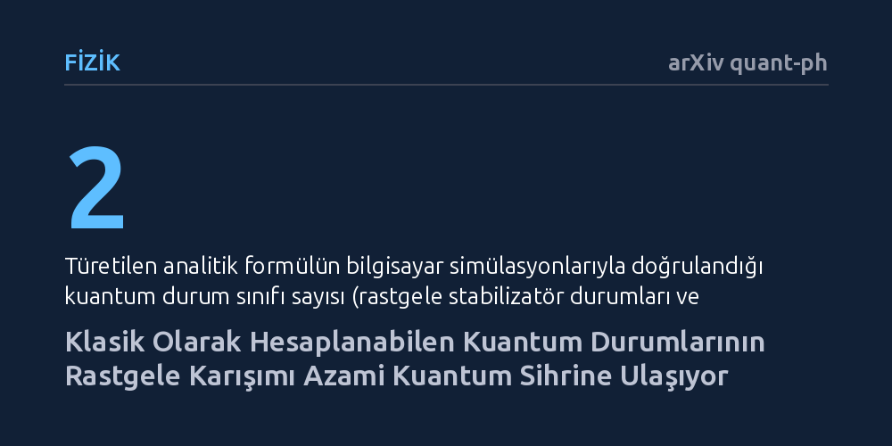

FIZIK · arXiv quant-ph · 2026-10-20
Araştırmacılar, klasik bilgisayarlarla kolayca simüle edilebilen kuantum durumlarının rastgele üst üste binmelerinin ne kadar kuantum sihri ürettiğini inceledi. Sonuçlar, az sayıda bileşenin rastgele birleşiminin bile hızla klasik bilgisayarlarca taklit edilemeyen azami karmaşıklık sınırına ulaştığını gösterdi.
Klasik yöntemlerle hesaplanması çok kolay olan temel kuantum durumlarının basitçe rastgele birleştirilmesinin bile sistemi klasik bilgisayarlar için simüle edilemez hale getirdiğini gösterir.

Kuantum bilgisayarlarının sunduğu potansiyel hesaplama gücü sıklıkla gündeme gelse de her kuantum durumu klasik bilgisayarlar karşısında bir üstünlük sağlamaz. Örneğin 'stabilizatör durumları' adı verilen özel kuantum halleri, kuantum mekaniğinin kurallarına bütünüyle uymalarına rağmen mevcut klasik bilgisayarlar tarafından hızlı ve verimli biçimde simüle edilebilir. Kuantum hesaplamayı klasik yöntemlerle taklit edilemez kılan asıl unsur, literatürde teknik olarak 'sihir' (magic veya non-stabilizerness) şeklinde adlandırılan özelliktir.
Araştırmacılar uzun süredir bu kuantum sihrinin hangi koşullarda ve ne kadar hızla ortaya çıktığını anlamaya çalışıyor. Ortada duran temel soru şuydu: Tek başlarına klasik olarak kolayca hesaplanabilen durumlar rastgele biçimde üst üste bindiğinde (süperpozisyon oluşturduğunda), ortaya çıkan yeni sistem klasik simülasyondan ne kadar uzaklaşır? Bu soru, kuantum algoritmalarının sınırlarını ve klasik bilgisayarların nerede tıkandığını belirlemek açısından kritik bir öneme sahiptir.
Araştırma ekibi, problemi incelemek için saf durum topluluklarını ele aldı ve Schur lemmasının koşullarını sağlayan büyük ölçekli kuantum sistemlerine odaklandı. Sistem boyutu sonsuza yaklaşırken (termodinamik limitte), süperpozisyondaki bileşen sayısına bağlı olarak kuantum sihrini yöneten genel bir analitik kapalı formül türettiler. Sihrin miktarını ölçmek için literatürde standart kabul edilen stabilizatör Rényi entropisinden faydalandılar.
Elde edilen teorik matematiksel formülün doğruluğunu sınamak amacıyla araştırmacılar kapsamlı sayısal bilgisayar simülasyonları yürüttü. Bu simülasyonlarda klasik olarak hesaplanabilen iki temel kuantum durum ailesi kullanıldı: rastgele stabilizatör durumları ve rastgele sürekli değişkenli Gauss durumları. Simülasyonlardan elde edilen veriler, kuramsal olarak türetilen analitik formülle tam bir uyum sergiledi.
Çalışmanın temel bulgusu, klasik olarak simüle edilebilen durumların rastgele üst üste binmelerinin kuantum sihrini hızla kuramsal azami seviyeye ulaştırdığını ortaya koydu. İncelenen matematiksel modele göre kuantum sihri, evrensel bir taban değeri ile duruma özgü bir fazlalığın toplamından oluşuyor. Süperpozisyondaki bileşen sayısı arttıkça bu fazlalık hızla baskılanıyor ve sistemin kuantum sihri logaritmik bir artış sergiliyor.
Bu artış çok geçmeden simetriyle sınırlandırılmış azami 'Haar-rastgele' tavanına ulaşıyor ve orada dengeleniyor. Yani tek tek ele alındığında klasik bir bilgisayarla kolayca çözülebilen basit durumlar, rastgele bir araya getirildiklerinde çok az sayıda bileşenle bile klasik yöntemlerin altından kalkamayacağı en yüksek kuantum karmaşıklığı seviyesine erişiyor.
Elde edilen bu sonuçlar, klasik bilgisayarların kuantum sistemlerini simüle etmekte neden zorlandığına dair temel düzeyde matematiksel bir açıklama sunuyor. Gerçek bir kuantum üstünlüğünün ortaya çıkması için sistemin her bir parçasının baştan karmaşık olması gerekmiyor; klasik olarak basit durumların rastgele birleşimi bile klasik taklidi hızla olanaksız hale getirebiliyor.
Bununla birlikte bulguların kuantum hata düzeltme kodları ve algoritma tasarımı üzerinde de doğrudan yansımaları bulunuyor. Klasik simülasyondan kaçınmak ve kuantum avantajı elde etmek isteyen araştırmacılar, rastgele süperpozisyonların sağladığı bu hızlı sihir doygunluğunu yeni hesaplama protokolleri tasarlamak için kuramsal bir rehber olarak kullanabilir.